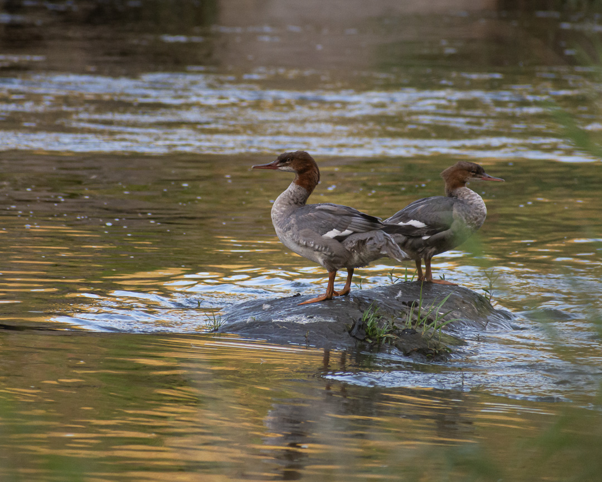
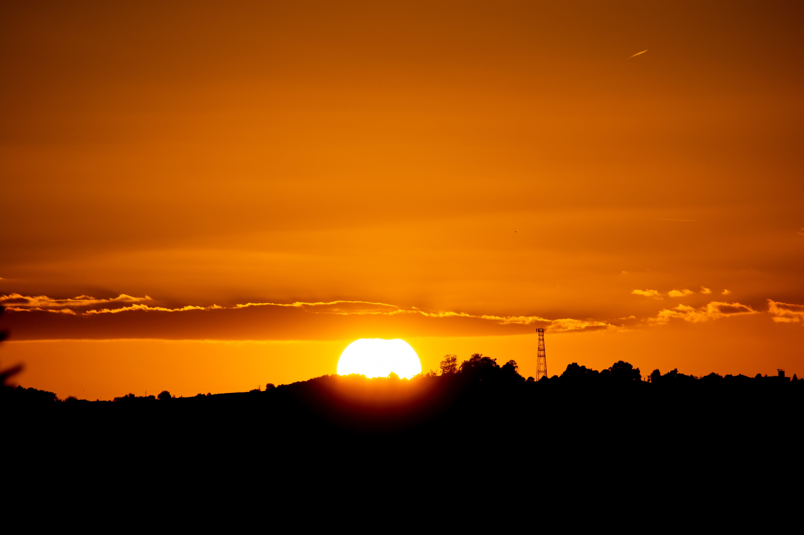
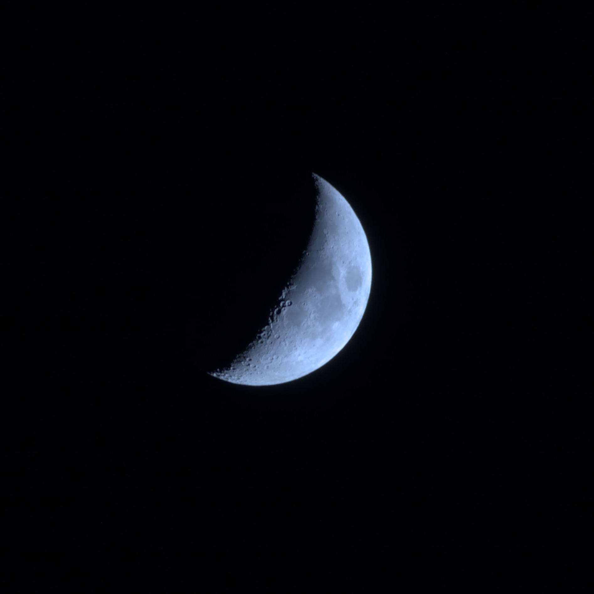
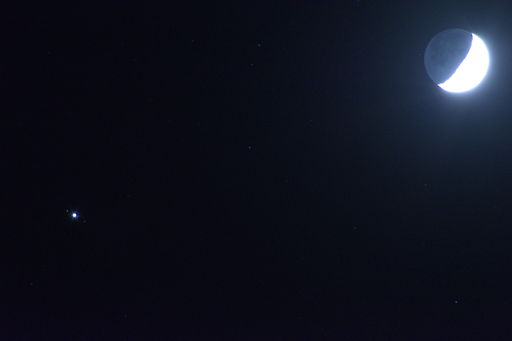
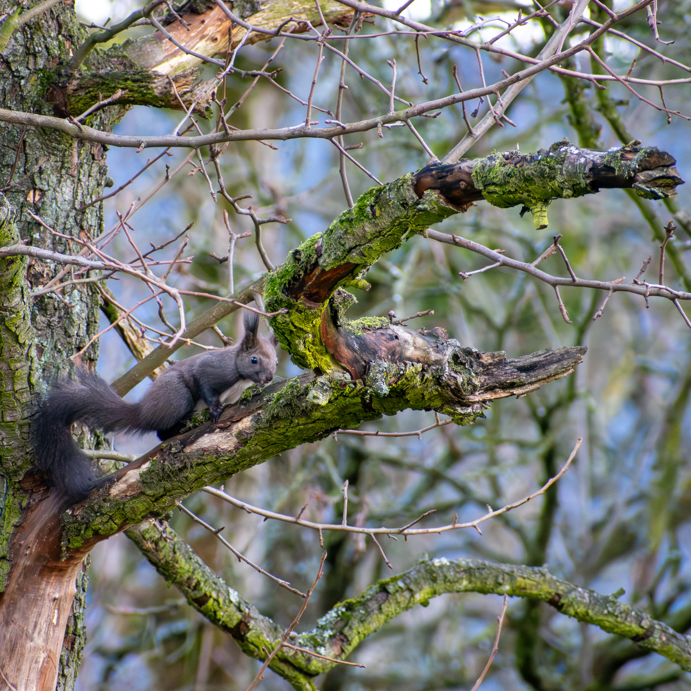

Z aparatem wędruję po okolicach Cieszyna i Beskidach, łapiąc poranne mgły, wschody i zachody słońca, przyrodę oraz nocne niebo.





Jestem pasjonatem i amatorem, który dopiero zaczyna swoją przygodę z fotografią. Traktuję tę galerię jak własny dziennik wypraw – miejsce, w którym zbieram swoje pierwsze kadry i obserwuję, jak zmienia się moje spojrzenie na światło.
Najczęściej ruszam w teren w okolicach Cieszyna i Beskidów o świcie lub po zmroku, testując przy okazji w praktyce swoją aplikację FotoPora.
Podziel się opinią o kadrach z okolic Cieszyna i Beskidów.